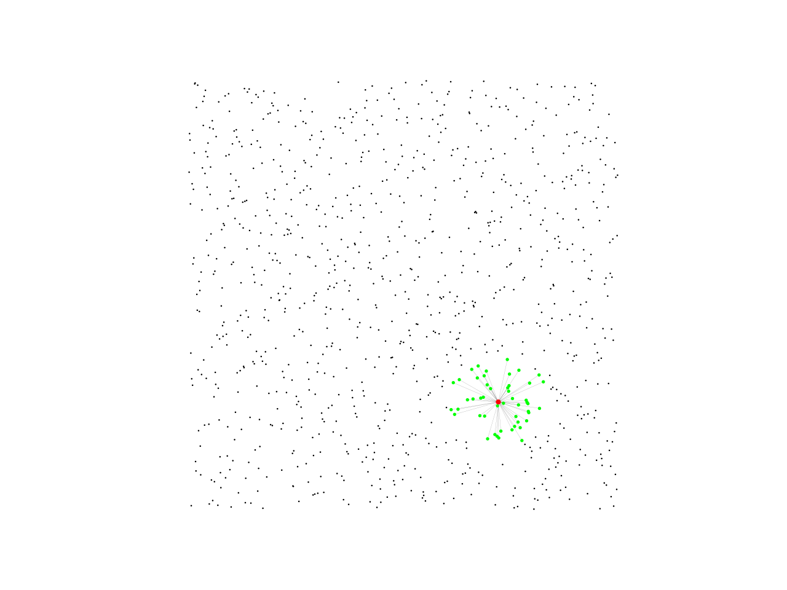

KDTree
-
class
compas.geometry.KDTree(objects=None)[source] Bases:
objectA tree for nearest neighbor search in a k-dimensional space.
Parameters: objects (list, optional) – A list of objects to populate the tree with. If objects are provided, the tree is built automatically. Defaults to None.-
root Node – The root node of the built tree. This is the median with respect to the different dimensions of the tree.
Example
from compas.geometry import KDTree from compas.geometry import pointcloud_xy from compas.visualization import Plotter plotter = Plotter() cloud = pointcloud_xy(999, (-500, 500)) point = cloud[0] tree = KDTree(cloud) n = 50 nnbrs = [] exclude = set() for i in range(n): nnbr = tree.nearest_neighbour(point, exclude) nnbrs.append(nnbr) exclude.add(nnbr[1]) for nnbr in nnbrs: print(nnbr) points = [] for index, (x, y, z) in enumerate(cloud): points.append({ 'pos' : [x, y], 'facecolor': '#000000', 'edgecolor': '#000000', 'radius' : 1.0 }) points.append({ 'pos' : point[0:2], 'facecolor': '#ff0000', 'edgecolor': '#ff0000', 'radius' : 5.0 }) lines = [] for xyz, label, dist in nnbrs: points[label]['facecolor'] = '#00ff00' points[label]['edgecolor'] = '#00ff00' points[label]['radius'] = 3.0 lines.append({ 'start' : point[0:2], 'end' : xyz[0:2], 'color' : '#000000', 'width' : 0.1, }) plotter.draw_lines(lines) plotter.draw_points(points) plotter.show()Methods
__init__([objects])Initialise a KDTree object. build(objects[, axis])Populate a kd-tree with given objects. nearest_neighbour(point[, exclude])Find the nearest neighbour to a given point, excluding neighbours that have already been found. nearest_neighbours(point, number[, ...])Find the N nearest neighbours to a given point. -